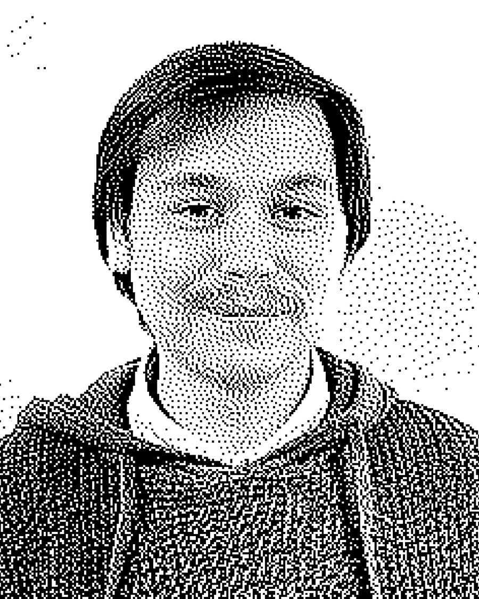

Олександр КудряшовOleksandr Kudriashov
Київ, УкраїнаKyiv, Ukraine
У дитинстві зовсім не цікавився мистецтвом і творчістю. Уроки малювання в школі також минули повз нього — тоді він мав інші пріоритети та захоплення. Після школи він випадково зацікавився 3D-графікою та роботою з відео, а паралельно відкрив для себе Photoshop. Саме в цей період Олександр почав поступово пробувати створювати щось власне — і для нього відкрився новий світ творчості та мистецтва. Тоді ж він уперше познайомився з колажем, який його захопив можливістю поєднувати різні зображення й створювати нові світи та сенси. З часом Олександр зрозумів, що хоче розвиватися саме у творчій сфері, тому почав глибше вивчати графічний і відеодизайн.
As a child, he was not interested in art and creativity at all. Art classes at school also passed him by — at that time, he had other priorities and hobbies. After school, he accidentally became interested in 3D graphics and video work, and at the same time discovered Photoshop. It was during this period that Oleksandr began to gradually try to create something of his own — and a new world of creativity and art opened up for him. At the same time, he was introduced to collage for the first time, which captivated him with the possibility of combining different images and creating new worlds and meanings. Over time, Oleksandr realized that he wanted to develop in the creative field, so he began to study graphic and video design in more depth.